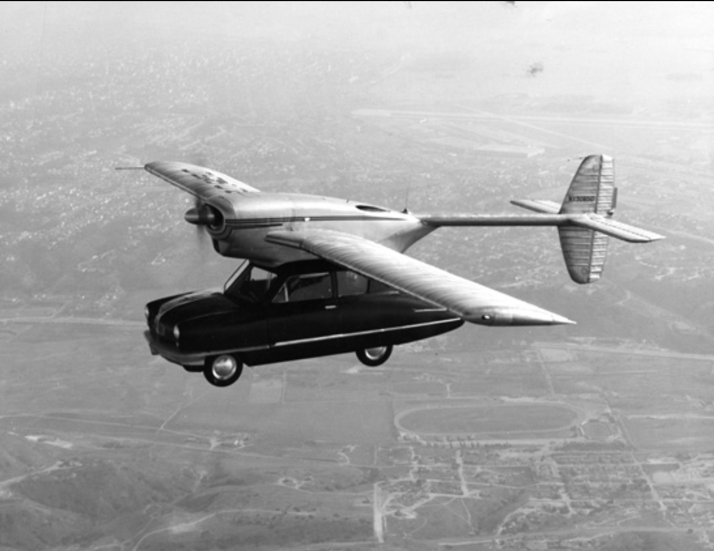
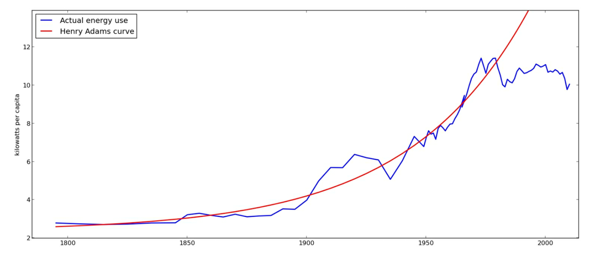
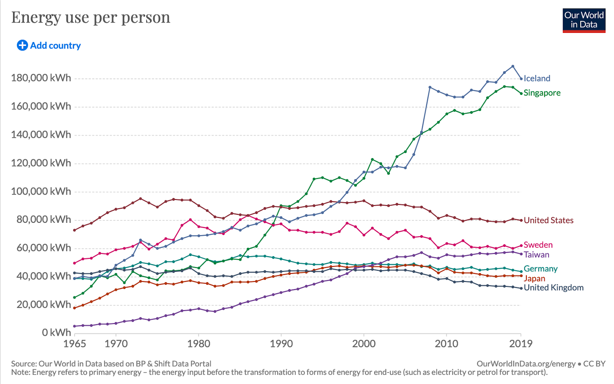
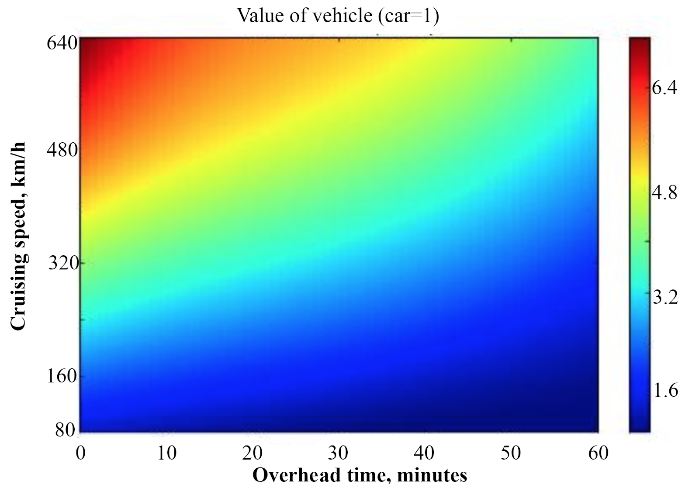
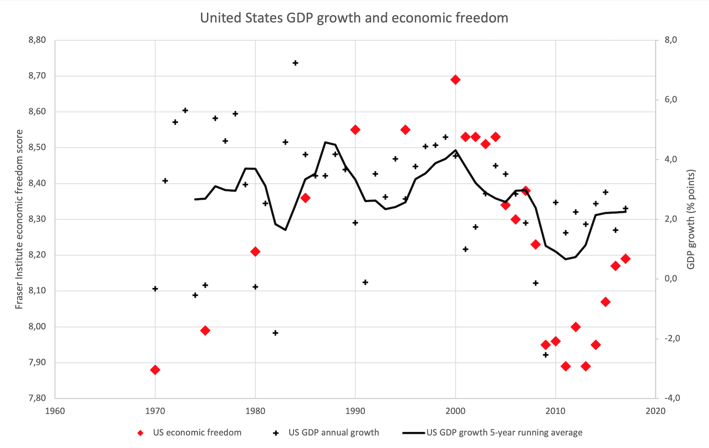

Review: Where is my Flying Car?
In the 50s and 60s, predictions of the future were filled with big physical technical marvels: spaceships, futuristic cities, and, most symbolically, flying cars. The lack of flying cars has become a cliche, whether as a point about the unpredictability of future technological progress, or a joke about hopeless techno-optimism.
For J. Storrs Hall, flying cars are not a joke. They are a feasible technology, as demonstrated by many historical prototypes that are surprisingly close to futurists' dreams, and practical too: likely to be more expensive than cars, yes, but providing many times more value to owners.
So, where are they?
|  | |
| Above: not a joke. (Public domain, original here) |
{kind=link}
The central motivating force behind Where is my Flying Car? is the disconnect between what is physically possible with modern science, and what our society is actually achieving. The immediate objection to such points is to say: "well, of course some engineer can imagine a world where all this fancy technology is somehow economically feasible and widespread, but in the real world everything is more complicated, and once you take these complications into account there's no surprising failure".
Hall's objection is that everything was going fine until 1970 or so.
Many people complain that technological progress has slowed. Flying cars, of course, but also: airliner cruising speeds have stagnated, the space age went on hiatus, cities are still single-level flat designs with traffic, nuclear power stopped replacing fossil fuels, and nanotechnology (in the long run, the most important technology for building anything) is growing slowly. Peter Thiel sums this up by saying "we wanted flying cars, instead we got 140 characters".
It's not just technology. There's an entire website devoted to throwing graphs at you about trends that changed around 1970 (and selling you Bitcoin on the side), and, while a bunch of it is Spurious Correlations material, they include enough important things, like a stagnation in median wages, that it's worth thinking about.
Perhaps the most fundamental indicator is that the energy available per person in the United States was increasing exponentially (a trend Hall names the Henry Adams curve), until, starting around 1970, it just wasn't:

Is this just because the United States is an outlier in energy use statistics? No; other developing countries have plateaued too, with the exception of Iceland and Singapore:
|  |
| (Source: Our World in Data, one of the best websites on the internet. You can play around with an interactive version of this chart here.) |
Hall tries to estimate what percentage of future predictions in some technical area have come true as a function of the energy intensity of the technology, and finds a strong inverse correlation: in less energy intensive areas (e.g. mobile phones) we've over-achieved relative to futurists' predictions, while the opposite is true with energy intensive big machines (e.g. flying cars). (This is necessarily very subjective, but Hall at least says he did not change any of his estimates after seeing the graph.)
Of course, we have to contrast the stagnation in some areas with enormous advancements during the same time. The most obvious example is computing, something that futurists generally missed. In biotechnology, the price of DNA sequencing has dropped exponentially and in just the past few years we've gotten powerful tools like CRISPR and mRNA vaccines. Meanwhile the average person is now twice as rich as in 1970, and life expectancy has increased by 15 years (and the numbers are not much lower if we restrict our attention just to developed countries).
Perhaps we should be content; maybe Peter Thiel should stop complaining now that we have 280 characters? After all, the problem is not that things are failing, but that they might be improving slower than they could be. That hardly seems like the end of the world. So why should we focus on technological progress? Has it really slowed? And how can we model it? I discuss these questions in another post. In this post, however, I will move straight onto Hall's favourite topic.
Cool technology
Flying cars
You might assume the case for flying cars looks something like this:
- You get to places very fast.
- Very cool.
However, there's a deeper case to be made for flying cars (or rapid transportation in general), and it starts with the observation that barefoot-walkers in Zambia tend to spend an hour or so a day travelling. Why is this interesting? Because this is the same as the average duration in the United States (of course Hall's other example is the US) or any other society.
Flying cars aren't about the speed – they're about the distance that this speed allows, given universal human preferences for daily travel duration. Cars on the road do about 60 km/h on average for any trip ("you might think that you could do better for a long trip where you can get on the highway and go a long way fast", Hall writes, but "the big highways, on the average, take you out of your way by an amount that is proportional to the distance you are trying to go"). A flying car that goes five times faster lets you travel within twenty-five times the area, potentially opening up a lot of choice.
Hall goes through some calculations about the utilities of different time-to-travel versus distance functions, given empirical results from travel theory, to produce this chart (which I've edited to improve the image quality and convert units) as a summary:

(The overhead time means how long it takes to transition into flying mode, for example if you have to attach wings to it, or drive to an airport to take off.)
Even a fairly lame flying car would easily be three times more valuable than a regular car, mainly by giving you more choice and therefore letting you visit places that you like more.
In terms of what a flying car would actually look like, you have several options. Helicopters are obvious, but they are about ten times the price of cars, mechanically complex (and with very low manufacturing tolerances), and limited by aerodynamics (the advancing blade pushes against the sound barrier, and the retreating one pushes against generating too little lift due to how slowly it moves) to a speed of 250 km/h or so.
Historically, many promising flying car designs that actually flew where autogyros, which generate thrust with a propeller but lift through an unpowered freely-rotating helicopter-like rotor. They generally can't take off vertically, but can land in a very small space.
Another design is a VTOL (vertical take-off and landing) aircraft. Some have been built and used as fighter jets, but they've gained limited use because they're slower and less manoeuvrable than conventional fighters and have less room for weapons. However, Hall notes that one experimental VTOL aircraft in particular – the XV-5 – would "have made one hell of a sports car" and its performance characteristics are recognisable as those of a hypothetical utopian flying car. It flew in 1964, but was cancelled because the Air Force wanted something as fast and manoeuvrable as a fighter jet, rather than "one hell of a sports car".
Of current flying car startups, Hall mentions Terrafugia and AeroMobil, which produce traditional gasoline-powered vehicles (both with fuel economies comparable in litres/km to ordinary cars). There's also Volocopter and EHang, both of which produce electric vehicles with constrained ranges.
Hall divides the roadblocks (or should I say NOTAMs?) for flying cars into four categories.
The first is that flying is harder than driving. To test this idea, Hall learned to fly a plane, and concluded that it is considerably harder, but not insurmountably. Besides, we're not far from self-driving; commercial passenger flights are close to self-piloting already, the existing Volocopter is only "optionally piloted", and the EHang 184 flies itself.
The second is technological. The main challenges here are flying low and slow without stalling (you want to be able to land in small places, at least in emergencies), and reducing noise to manageable levels.
The third is economic. Even though the technology theoretically exists, it may be that we're not yet at a stage where personal flying machines are economically feasible. To some extent this is true; Hall admits that even on the pre-1970 trends in private aircraft ownership, the US private aircraft market would only be something like 30 000 - 40 000 per year (compared to the 2 000 or so that it currently is), about a hundredth of the number of cars sold. The economics means we should expect that the adoption curve is shallow, but not that it's necessarily non-existent.
The final reason is simple: even if you could make a flying car, you wouldn't be allowed to. Everything in aviation is heavily regulated, pushing up costs in a way that, Hall says, leads private pilots to joke about "hundred-dollar burgers". Of course, flying is hard, so you want standards high enough that at the very least you don't have to dodge other people's home-made flying motorbikes as they rain down from the sky, but in Hall's opinion the current balance is wrong.
And it's not just that the balance is wrong, but that the regulations are messed up. For example, making aircraft in the light sports aircraft category would be a great way to experiment with electric flight, but the FAA forbids them from being powered by anything other than a single internal combustion piston engine.
In particular, the FAA "has a deep allergy to people making money with flying machines". If you own a two-seat private aircraft, you can't charge a passenger you take on a flight more than half of the fuel cost, so no air Uber. Until the FAA stopped dragging its feet on drone regulation in 2016, drones were operated under model aircraft rules, and therefore could not be used for anything other than hobby or recreational purposes. Similar rules still apply to ultralights, with one suspicious exception: a candidate for a federal, state, or local election is allowed to pay for a flight.
(And of course, to all these rules it's usually possible to apply for a waiver – so if you're a big company with an army of lawyers, do what you want, but if you're two people in a garage, good luck.)
There's no clear smoking gun of one piece of regulation specifically causing significant harm to flying car innovation. However, the harms of regulation are often a death-by-a-thousand-cuts situation, where a million rules each clip away at what is permissible and each add a small cost. Hall's conclusion is harsh: "It’s clear that if we had had the same planners and regulators in 1910 that we have now, we would never have gotten the family car at all."
One particular effect of flying cars would be to weaken the pull of cities, another topic to which Hall brings a lot of opinions.
City design
"Designing a city whose transportation infrastructure consists of the flat ground between the boxes is insane."
This is true. Most traffic problems would go away if you could add enough levels. However, "[e]ven the recent flurry of Utopia-building projects are still basically rows of boxes sitting on the dirt plus built-in wifi so the self-driving cars can talk to each other as they sit in automated traffic jams".
As usual, Hall spies some sinister human factors lurking behind the scenes, delaying his visions of techno-utopia:
"There is a perverse incentive for bureaucrats and politicians to force people to interact as much as possible, and indeed to interact in contention, as that increases the opportunities for control and the granting of favors and privileges. This is probably one of the major reasons that our cities have remained flat, one-level no-man’s-lands where pedestrians (and beggars and muggers) and traffic at all scales are forced to compete for the same scarce space in the public sphere, while in the private sphere marvels of engineering have leapt a thousand feet into the sky, providing calm, safe, comfortable environments with free vertical transportation."
This is an interesting idea, and I've read enough Robin Hanson to not discount such perverse explanations immediately, but once again I'm not convinced how important this factor is, and Hall, as usual, is happy to paint only in broad to strokes.
However, he makes a clearly strong point here:
"Densification proponents often point to an apparent paradox: removing a highway which crosses a community often does not increase traffic on the remaining streets, as the kind of hydraulic flow models used by traffic planners had assumed that it would. On the average, when a road is closed, 20% of the traffic it had handled simply vanishes. Traffic is assumed to be a bad thing, so closing (or restricting) roads is seen as beneficial. Well duh. If you closed all the roads, traffic would go to zero. If you cut off everybody’s right foot and forced them to use crutches, you’d get a lot less pedestrian traffic, too."
Hall takes a liberal principle of being strongly in favour of giving people choice, arguing that the goal of city design and transportation infrastructure should be to maximise how far people can travel quickly, rather than trying to ensure that they don't need to travel anywhere other than the set of choices the all-seeing, all-knowing urban designer saw fit to place nearby. Of course, once again flying cars are the best:
"The average American commute to work, one way by car, ranges from 20 minutes to half an hour (the longer times in denser areas). This gives you a working radius of about 15 miles [= 24 km], or [1800 square kilometres] around home to find a workplace (or around work to find a home). With a fast VTOL flying car, you get a [240-kilometre] radius or [180 thousand square kilometres] of commutable area. Cars, trucks, and highways were clearly one of the major causes of the postwar boom. It isn’t perhaps realized just how much the war on cars contributed to the great stagnation—or how much flying cars could have helped prolong the boom."
Nuclear power
I discuss nuclear power at length in another post.
Space travel?
What about the classic example of supposedly stalled innovation – we were on the moon in 1969, and won't return until at least 2024?
"With space travel, there’s a pretty straightforward answer: the Apollo project was a political stunt, albeit a grand and uplifting one; there was no compelling reason to continue going to the moon given the cost of doing so."
The general curve of space progress seems to be over-achievement relative to technological trends in the 60s, followed by stagnation, not because the technology is impossible – we did go to the moon after all – but because it just wasn't economical. Only now, with private space companies like SpaceX and Rocket Lab actually making a business out of taking things to space outside the realm of cosy costs-plus government contracts is innovation starting to pick up again.
(In the past ten years, we've seen the first commercial crewed spacecraft, reuse of rocket stages, the first methane-fuelled rocket engine ever flown, the first full-flow staged-combustion rocket engine ever flown, and the first liquid-fuelled air-launched orbital rocket, just to pick some examples.)
Hall has some further comments about space. First, in this passage he shows an almost-religious deference to trend lines:
"As you can see from the airliner cruising speed trend curve, we shouldn’t have expected to have commercial passenger space travel yet, even if the Great Stagnation hadn’t happened."
I don't think it makes sense to take a trend line for atmospheric flight speeds and use that to estimate when we should have passenger space travel; the physics is completely different, and in particular speeds are very constrained in orbit (you need to go 8 km/s to stay in orbit, and you can't go faster around the Earth without constant thrusting to stop yourself from flying off – something Hall clearly understands, as he explains it more than once).
Secondly, he is of course in favour of everything high-energy and nuclear.
For example: Project Orion was an American plan for a spacecraft powered (potentially from the ground up, rather than just in space) by throwing nuclear bombs out the back and riding the plasma from the explosions. This is a good contender for the stupidest-sounding idea that actually makes for a solid engineering plan; it's a surprisingly feasible way of getting sci-fi performance characteristics from your spacecraft. Other feasible methods have either far lower thrust (like ion engines, meaning that you can't use them to take off or land), or have far lower exhaust velocity (which means much more of your spacecraft needs to be fuel). The obvious argument against Orion, at least for atmospheric launch, is the fallout, but Hall points out it's actually not that bad – the number of additional expected cancer deaths from radiation per launch is "only" in the single digits, and that's under a very conservative linear no-threshold model of radiation dangers, which is likely wrong. (The actual reasons for cancellation weren't related to radiation risks, but instead the prioritisation of Apollo, the Partial Test Ban Treaty of 1963 that banned atmospheric nuclear tests, and the fact that no one in the US government had a particularly pressing need to put a thousand tons into orbit.) Hall also mentions an interesting fact about Orion that I hadn't seen before: "the total atmospheric contamination for a launch was roughly the same no matter what size the ship; so that there would be an impetus toward larger ones" – perhaps Orion would have driven mass space launch.
A more controlled alternative to bombing yourself through space is to use a nuclear reactor to heat up propellant in order to expel it out the back of your rocket at high speeds, pushing you forwards. The main limit with these designs is that you can't turn the heat up too much without your reactor blowing up. Hall's favoured solution is a direct fission-to-jet process, where the products of your nuclear reaction go straight out the engine without all this intermediate fussing around with heating the propellant. A reaction that converts a proton and a lithium-7 atom into 2 helium nuclei would give an exhaust velocity of 20 Mm/s (7% of the speed of light), which is insane.
To give some perspective: let's say your design parameters are that you have a 10 ton spacecraft, of which 1 ton can be fuel. With chemical rocket technology, this gives you a little toy with a total ∆V of some 400 m/s, meaning that if you light it up and let it run horizontally along a frictionless train track, it'll break the sound barrier by the time it's out of fuel, but it can't take you from a Earth-to-moon-intercept trajectory to a low lunar orbit even with the most optimal trajectories. With the proton + lithium-7 process Hall describes, your 10% fuel, 10-ton spaceship can accelerate at 1G for two days. If you want to go to Mars, instead of this whole modern business of waiting for the orbital alignment that comes once every 26 months and then doing a 9-month trip along the lowest-energy orbit possible, you can almost literally point your spaceship at Mars, accelerate yourself to a speed of 1 000 km/s over a day (for comparison, the speeds of the inner planets in their orbits are in the tens of kilometres per second range), coast for maybe a day at most, and then decelerate for another day. For most of the trip you get free artificial gravity because your engine is pushing you so hard. This would be technology so powerful even Hall feels compelled to tack on a safety note: "watch out where you point that exhaust jet".
Nanotechnology!
Imagine if machine pieces could not be made on a scale smaller than a kilometre. Want a gear? Each tooth is a 1km x 1km x 1km cube at least. Want to build something more complicated, say an engine? If you're in a small country, it may well be a necessarily international project, and also better keep it fairly flat or it won't fit within the atmosphere. Want to cut down a single tree? Good luck.
This is roughly the scale at which modern technology operates compared to the atomic scale. Obviously this massively cuts down on what we can do. Having nanotechnology that lets us rearrange atoms on a fine level, instead of relying on astronomically blunt tools and bulk chemical reactions, could put the capabilities of physical technology on the kind of exponential Moore's law curve we've seen in information technology.
There are some problems in the way. As you get to smaller and smaller scales:
- matter stops being continuous and starts being discrete (and therefore for example oil-based lubrication stops working);
- the impact of gravity vanishes but the impact of adhesion increases massively;
- heat dissipation rates increase;
- everything becomes springy and nothing is stiff anymore; and
- hydrogen atoms (other atoms are too heavy) can start doing weird quantum stuff like tunnelling.
Also, how do we even get started? If all we have are extremely blunt tools, how do you make sharp ones?
There are two approaches. The first, the top-down approach, was suggested in a 1959 talk by Richard Feynman, which is credited as introducing the concept of nanotechnology. First, note that we currently have an industrial tool-base at human scales that is, in a sense, self-replicating: it requires human inputs, but we can draw a graph of the dependencies and see that we have tools to make every tool. Now we take this tool-base, and create an analogous one at one-fourth the scale. We also create tools that let us transfer manipulations – the motions of a human engineer's hands, for example – to this smaller-scale version (today we can probably also automate large parts of it, but this isn't crucial). Now we have a tool-base that can produce itself at a smaller scale, and we can repeat the process again and again, making adjustments in line with the above points about how the engineering must change. If each step is one-fourth the previous, 8 iterations will take us from a millimetre-scale industrial base to a tens-of-nanometres-scale one.
The other approach is bottom-up. We already have some ability to manipulate things on the single-digit nanometre scale: the smallest features on today's chips are in this range, we have atomic-scale microscopes that can also manipulate atoms, and of course we're surrounded by massively complicated nanotechnology called organic life that comes with pre-made nano-components. Perhaps these tools let us jump straight to making simple nano-scale machines, and a combination of these simple machines and our nano-manipulation tools lets us eventually build the critical self-sustaining tool-base at the atomic level.
Weather machines?!
Here's one thing you could do with nanotechnology: make 5 quintillion 1 cm controllable hydrogen balloons with mirrors, release them into the atmosphere, and then set sunlight levels to be whatever you want (without nanotechnology, this might also be doable, but nanotechnology lets you make very thin balloons and therefore removes the need to strip-mine an entire continent for the raw materials).
Hall calls this a weather machine, and it is exactly what it says on the tin, both on a global and local level. He estimates that it would double global GDP by letting regions set optimal temperatures, since "you could make land in lots of places on the earth, such as Northern Canada and Russia, as valuable as California". Of course, this is assuming that we don't care about messing up every natural ecosystem and weather pattern on the planet, but if the machine is powerful enough we might choose to keep the still-wild parts of the world as they are. I don't know if this would work, though; sunlight control alone can do a lot to the weather, but perhaps you'd need something different to avoid, for example, the huge winds from regional temperature differences? However, with a weather machine, the sort of subtle global modifications needed to reverse the roughly 1 watt per square metre increase in incoming solar radiation that anthropogenic emissions have caused would be trivial.
Weather machines are scary, because we're going to need very good institutions before that sort of power can be safely wielded. Hall thinks they're coming by the end of the century, if only because of the military implications: not only could you destroy agriculture wherever you want, but the mirrors could also focus sunlight onto a small spot. You could literally smite your enemies with the power of the sun.
Don't want things in the atmosphere, but still want to control the climate? Then put up sunshades into orbit, incentivising the development of a large-scale orbital launch infrastructure at the same time that we can afterwards use to settle Mars or whatever. As a bonus, put solar panels on your sunshade satellites, and you can generate more power than humanity currently uses.
As always, nothing is too big for Hall. He goes on to speculate about a weather machine Dyson sphere at half the width of the Earth's orbit. Put solar panels on it, and it would generate enormous amounts of power. Use it as a telescope, and you could see a phone lying on the ground on Proxima Centauri b. Or, if the Proxima Centaurians try to invade, you can use it as a weapon and "pour a quarter of the Sun’s power output, i.e. 100 trillion terawatts, into a [15-centimetre] spot that far away, making outer space safe for democracy."
Flying cities?!?
And because why the hell not: imagine a 15-kilometre airplane shaped like a manta ray and with a thickness of a kilometre (so the Burj Khalifa fits inside), with room for 10 million people inside. It takes 200 GW of power to stay flying – equivalent to 4 000 Boeing 747s – which could be provided by a line of nuclear power plants every 100 metres or so running along the back. This sounds like a lot, but Hall helpfully points out the reactors would only be 0.01% of the internal volume, so you could still cluster Burj Khalifas inside to your heart's content, and the energy consumption comes out to only 20 kW per person, about where we'd be today if energy use had continued growing on pre-1970s trends.
If you don't want to go to space but still want to leave the Earth untouched, this is one solution, as long as you don't mind a lot of very confused birds.
Technology is possible, but has risks
I worry that Where is my Flying Car? easily leaves the impression that everything Hall talks about is part of some uniform techno-wonderland, which, depending on your prior about technological progress, is somewhere between certainly going to happen or permanently relegated to the dreams of mad scientists. Hall does not work to dispel this impression: he goes back and forth between talking about how practical flying cars are and exotic nuclear spacecraft, or between reasonable ideas about traffic layout in cities and far-off speculation about city-sized airplanes. Credible world-changing technologies like nanotechnology easily seem like just another crazy thought Hall sketched out on the back of the envelope and could not stop being enthusiastic about.
So should we take Hall's more grounded speculation seriously and ignore the nano-nuclear-space-megapolises? I think this would be the wrong takeaway. First, I'm not sure Hall's crazy speculation is crazy enough to capture possible future weirdness within it; he restricts himself mainly to physical technologies, and thus leaves out potentially even weirder things like a move to virtual reality or the creation of superhuman intelligence (whether AI or augmented humans).
Second, Hall does have a consistent and in some way realist perspective: if you look at the world – not at the institutions humans have built, or whatever our current tech toolbox contains, but at the physical laws and particles at our disposal – what do you come up with?
After all, our world is ultimately not one of institutions and people and their tools. The "strata" go deeper, until you hit the bedrock of fundamental physics. We spend most of our time thinking about the upper layers, where the underlying physics is abstracted out and the particles partitioned into things like people and countries and knowledge. This is for good reason, because most of the time this is the perspective that lets you best think about things important to people. Occasionally, however, it's worth taking a less parochial perspective by looking right down to the bedrock, and remembering that anything that can be built on that is possible, and something we may one day deal with.
This perspective should also make clear another fact. The things we care about (e.g. people) exist many layers of abstraction up from the fundamental physics, and are therefore fragile, since they depend on the correct configuration of all levels below. If your physical environment becomes inhospitable, or an engineered virus prevents your cells from carrying out their function, the abstraction of you as a human with thoughts and feelings will crash, just like a program crashes if you fry the circuits of the computer it runs on.
So there are risks, new ones will appear as we get better at configuring physics, and stopping civilisation from accidentally destroying itself with some new technology is not something we're automatically guaranteed to succeed at.
Hall does not seem to recognise this. Despite all his talk about nanotechnology, the grey goo scenario of self-replicating nanobots going out of control and killing everyone doesn't get a mention. As far as I'm aware, there's no strong theoretical reason for this to be impossible – nanobots good at configuring carbon/oxygen/hydrogen atoms are a very reasonable sort of nanobot, and I can't help but noticing that my body is mainly carbon, oxygen, and hydrogen atoms. "What do you replace oil lubrication with for your atomic scale machine parts" is a worthwhile question, as Hall notes, but I'd like to add that so is the problem of not killing everyone.
Hall does mention the problem of AI safety:
"The latest horror-industry trope is right out of science fiction [...]. People are trying to gin up worries that an AI will become more intelligent than people and thus be able to take over the world, with visions of Terminator dancing through their heads. Perhaps they should instead worry about what we have already done: build a huge, impenetrably opaque very stupid AI in the form of the administrative state, and bow down to it and serve it as if it were some god."
What's this whole thing with arguments of the form "people worry about AI, but the real AI is X", where X is whatever institution the author dislikes? Here's another example from a different political perspective (by sci-fi author Ted Chiang, whose fiction I enjoy). I don't think this is a useless perspective – there is an analogy between institutions that fail because their design optimises for the wrong thing, and the more general idea of powerful agents accidentally designed to optimise for the wrong thing – but at the end of the day, surprise surprise, the real AI is a very intelligent computer program.
Hall also mentions he "spent an entire book (Beyond AI) arguing that if we can make robots smarter than we are, it will be a simple task to make them morally superior as well." This sounds overconfident – morality is complicated, after all – but I haven't read it.
As for climate change, Hall acknowledges the problem but justifies largely dismissing it by citing “[t]he actual published estimates for the IPCC’s worst case scenario, RCP8.5, [which] are for a reduction in GDP of between 1% and 3%". This is true ... if you only consider the United States! (The EU is in the same range but the global estimates range up to 10%, because of a disproportionate effect on poor tropical countries.) As the authors of that very report also note, these numbers don't take into account non-market losses. If Hall wants to make an argument for techno-optimistic capitalism, he should consider taking more care to distinguish himself from the strawman version.
It's not the technology, stupid!
Hall does not think that we'd have all the technologies mentioned above if only technological progress had not "stagnated". The things he expects could've happened by now given past trends are:
- The technological feasibility of flying cars would be demonstrated and sales would be on the rise; Hall goes as far as to estimate the private airplane market in the US could have been selling 30k-40k planes per year (a fairly tight confidence interval for something this uncertain); compare with the actual US market today, which sells around 16 million cars and a few thousand private aircraft per year.
- Demonstrated examples of multi-level cities and floating cities.
- Chemical spacecraft technology would be about where they are now, but some chance that government funding would have resulted in Project Orion-style nuclear launch vehicles.
- Nanotechnology: basic things like ammonia fuel cells might exist, but not fancier things like cell repair machines or universal fabricators.
- Nuclear power would generate almost all electricity, and hence there would be a lot less CO2 in the atmosphere (this study estimates 174 billion fewer tons of CO2 had reasonable nuclear trends continued, but Hall optimistically gives the number as 500 billion tons).
- AI and computers at the same level as today.
- A small probability that something unexpected along the lines of cold fusion would have turned out to work and been commercialised.
- A household income several times larger than today.
So what went wrong? Hall argues:
"The faith in technology reflected in Golden Age SF and Space Age America wasn’t misplaced. What they got wrong was faith in our culture and bureaucratic arrangements."
He gives two broad categories of reasons: concrete regulations, and a more general cultural shift from hard technical progress to worrying and signalling.
Regulation ruins everything?
Hall does not like regulation. He estimates that had regulation not grown as it did after 1970, the increased GDP growth might have been enough to make household incomes 1.5 to 2 times higher than they are today in the US. I can find some studies saying similar things – here is one claiming 0.8% lower GDP growth per year since 1980 due to regulation, which would imply today's economy would be about 1.3 times larger had this drag on growth existed. As far as I can tell, these estimates also don't take into account the benefits of regulation, which are sometimes massive (e.g. banning lead in gasoline). However, I think most people agree that regardless of how much regulation there should be, it could be a lot smarter.
Hall's clearest case for regulation having a big negative impact on an industry is private aviation in the United States, which crashed around 1980 after more stringent regulations were introduced. The number of airplane shipments per year dropped something like six-fold and never recovered.
A much bigger example is nuclear power, which I will discuss in an upcoming post, and which Hall also has plenty to say about.
Strangely, Hall misses perhaps the most obvious case in modern times: GMOs pointlessly being almost regulated out of existence, a story told well in Mark Lynas' Seeds of Science (my review here). Perhaps this is because of Hall's focus on hard sciences, or his America-centrism (GMO regulation is worse in the EU than in the United States).
And speaking of America-centrism, the biggest question I had is why even if the US is bad at regulation, no country decides to do better and become the flying car capital of the world. Perhaps good regulation is hard enough that no one gets it right? Hall makes no mention of this question, though.
He does, however, throw plenty of shades on anything involving centralisation. For example:
"Unfortunately, the impulse of the Progressive Era reformers, following the visions of [H. G.] Wells (and others) of a “Scientific Socialism,” was to centralize and unify, because that led to visible forms of efficiency. They didn’t realize that the competition they decried as inefficient, whether between firms or states, was the discovery procedure, the dynamic of evolution, the genetic algorithm that is the actual mainspring of innovation and progress."
He brings some interesting facts to the table. For example, an OECD survey found a 0.26 correlation between private spending on research & development and economic growth, but a -0.37 between public R&D and growth. Here's Hall's once again somewhat dramatic explanation:
“Centralized funding of an intellectual elite makes it easier for cadres, cliques, and the politically skilled to gain control of a field, and they by their nature are resistant to new, outside, non-Ptolemaic ideas. The ivory tower has a moat full of crocodiles.”
He backs this up with his personal experiences of US government spending on nanotechnology lead to a flurry of scientists trying to claim that their work counted as nanotechnology (up to and including medieval stained glass windows) as well as trying to discredit anything that actually was nanotechnology, to make sure that the nanotechnologists wouldn't steal more federal funding in the future.
Studies, not surprisingly, find that the issue is more complicated (see for example here, which includes a mention of the specific survey Hall references).
Hall also includes a graph of economic growth vs the Fraser Institute's economic freedom score in the United States. I've created my own version below, including some more information than Hall does:

In general, it seems sensible to expect economic freedom to increase GDP: the more a person's economic choices are limited, the more likely the limitations are to prevent them from taking the optimal action (the main counterexample being if optimal actions for an individual create negative externalities for society). We can also see that this is empirically the case – developed countries tend to have high economic freedom. However, in using this graph as clear evidence, I think Hall is once again trying to make too clear a case on the basis of one correlation.
Effective decentralised systems, whether markets or democracy, are always prone to attack by people who claim that things would be better if only we let them make the rules. Maybe it takes something of Hall's engineer mindset to resist this impulse and see the value of bloodless systems and of general design principles like feedback and competition. (And perhaps Hall should apply this mindset more when evaluating the strength of evidence for his economic ideas.)
As for what the future of societal structure looks like, Hall surprisingly manages to avoid proposing flying-car-ocracy:
""[It] may well be possible to design a better machine for social and economic control than the natural marketplace. But that will not be done by failing to understand how it works, or by adopting the simplistic, feedback-free methods of 1960s AI programs. And if ever it is done, it will be engineers, not politicians, who do it."
He goes further:
"As a futurist, I will go out on a limb and make this prediction: when someone invents a method of turning a Nicaragua into a Norway, extracting only a 1% profit from the improvement, they will become rich beyond the dreams of avarice and the world will become a much better, happier, place. Wise incorruptible robots may have something to do with it."
Risk perception and signalling
Hall's second reason for us not living up to expectations for technological progress is cultural. He starts with the idea of risk homeostasis in psychology: everyone has some tolerance for risk, and will seek to be safer when they perceive current risk to be higher, and take more risks when they perceive current risk to be lower. In developed countries, risks are of course ridiculously low compared to historical levels, so most people feel safer than ever. Some start skydiving in response, but Hall suggests there's another effect that happens when an entire society finds itself living below their risk tolerance:
"One obvious way [to increase perceived risk] is simply to start believing scare stories, from Corvairs to DDT to nuclear power to climate change. In other words, the Aquarian Eloi became phobic about everything specifically because we were actually safer, and needed something to worry about."
I know what you're thinking – what the hell are "Aquarian Eloi"? Hall likes to come up with his own terms for things, and in this case he is making a reference to H. G. Wells' The Time Machine, in which descendants of humanity live out idle and dissolute lives (modelled on England's idle rich of the time), in order to label what he claims is the modern zeitgeist. Yes, this book is weird at times.
Another cultural idea he touches on is increased virtue signalling. Using the idea of Maslow's hierarchy of needs, he explains that as more and more of the population is materially well-off, more people invest more effort into self-actualisation. Some of this is productive, but, humans being humans, a lot of this effort goes into trying to signal how virtuous you are. Of course, there's nothing inherently wrong with that, as long as your virtue signalling isn't preventing other people climbing up from lower levels of Maslow's hierarchy – or, Hall would probably add, from building those flying cars.
Environmentalism vs Greenism
A particular sub-case of cultural change that Hall has a lot to say about is the "Green religion", something he distinguishes (though sometimes with not enough care) from perfectly reasonable desires "to live in a clean, healthy environment and enjoy the natural world".
This ideological, fear-driven and generally anti-science faction within the environmentalist movement is much the same thing as what Steven Pinker calls "Greenism", which I talked about in my review of Enlightenment Now (search for "Greenism") and also features in my review of Mark Lynas' Seeds of Science (search for "torpedoes"). Unlike Lynas or even Pinker, Hall does not hold back when it comes to criticising this particular strand of environmentalism. He explains it as an outgrowth of the risk-averseness and virtue signalling trends described above. The "Green religion", he claims, is now the "default religion of western civilization, especially in academic circles", and "has developed into an apocalyptic nature cult". To explain its resistance to progress and improving the human condition, he writes:
"It seems likely that the fundamentalist Greens started with the notion that anything human was bad, and ran with the implication that anything that was good for humans was bad. In particular, anything that empowered ordinary people in their multitudes threatened the sanctity of the untouched Earth. The Green catechism seems lifted out of classic Romantic-era horror novels. Any science, any engineering, the “acquirement of knowledge,” can only lead to “destruction and infallible misery.” We must not aspire to become greater than our nature."
There are troubling tendencies in ideological Greenism (as there is with anything ideological), but I think "apocalyptic nature cult" takes it too far, and as a substitute religion for the west, it has some formidable competitors. Hall is right to point out the tension between improving human welfare and Greenist desires to limit humans, but I'd bet that the driving factor isn't direct disdain for humans, but rather the sort of sacrificial attitudes that are common in humans (consider the people who went around whipping themselves during the Black Death to try to atone for whatever God was punishing them for). Probably there's some part of human psychology or our cultural heritage that makes it easy to jump to sacrifice, disparaging ourselves (or even all of humanity), and repentance as the answer to any problem. While this a nobly selfless approach, it's just less effective than, and sometimes in opposition to, actually building things: developing new technologies, building clean power plants, and so on.
Hall also goes too far in letting the Greenists tar his view of the entire environmentalist movement. Not only is climate change a more important problem than the 1-3% estimated GDP loss for the US suggests, but you'd think that the sort of big technical innovation that is happening with clean tech would be exactly the sort of progress Hall would be rooting for.
Hall does have an environmentalist proposal, and of course it involves flying cars:
"The two leading human causes of habitat destruction are agriculture and highways—the latter not so much by the land they take up, but by fragmenting ecosystems. One would think that Greens would be particularly keen for nuclear power, the most efficient, concentrated, high-tech factory farms, and for ... flying cars. "
[Ellipsis in original]
Energy matters!
Despite being partly blinded by his excessive anti-Greenism, there is one especially important correction to some strands of environmentalist thinking that Hall makes well: cheap energy really matters and we need more of it (and energy efficiency won't save the day).
Above, I used the stagnation in energy use per capita as an example of things going wrong. This may have raised some eyebrows; isn't it good that we're not consuming more and more energy? Don't we want to reduce our energy consumption for the sake of the environment?
First, it is obviously true that we need to reduce the environmental impact of energy generation. Decoupling GDP growth from CO2 emissions is one of the great achievements of western countries over the past decades, and we need to massively accelerate this trend.
However, our goal, if we're liberal humanists, should be to give people choices and let them lead happy lives (while applying the same considerations to any sentient non-human beings, and ideally not wrecking irreplaceable ecosystems). In our universe, this means energy. Improvements in the quality of life over history are, to a large extent, improvements in the amount of energy each person has access to. This is very true:
“Poverty is ameliorated by cheap energy. Bill Gates, nowadays perhaps the world’s leading philanthropist, puts it, “If you could pick just one thing to lower the price of—to reduce poverty—by far you would pick energy.”"
Even in the United States, "[e]nergy poverty is estimated to kill roughly 28,000 people annually in the US from cold alone, a toll that falls almost entirely on the poor".
Climate change cannot be solved by reducing energy consumption, because there are six billion people in the world who have not reached western living standards and who should be brought up to them as quickly as possible. This will take energy. What we need is to simultaneously massively increase the amount of energy that humanity uses, while also switching over to clean energy. If you think only one of these is enough, you have either failed to understand the gravity of the world's poverty situation or the gravity of its environmental one.
(Energy efficiency matters, because all else being equal, it reduces operating costs. It is near-useless for solving emissions problems, however, because the more efficiently we can use energy, the more of it we will use. Hall illustrates this with a thought experiment of a farmer who uses a truck to carry one crate of tomatoes at a time from their farm to a customer, and whose only expense is fuel for the truck. Double its fuel efficiency, and it's economical to drive twice as far, and hence service four times as many customers (assuming customer number is proportional to reachable area), plus each trip is twice as long on average. The net result is that the 2x increase in efficiency leads to 8x more kilometres driven and hence 4x higher fuel consumption. The general case is called Jevons paradox.)
So yes, we need energy, most urgently in developing countries, but the more development and deployment of new energy sources there is, the cheaper they will be for everyone – consider Germany's highly successful subsidies for solar power – so developed countries have a role to play as well. (Also, are we sure there would be no human benefits to turning the plateauing in developed country energy use back into an increase?)
You'd think this is obvious. Unfortunately it isn't. In a section titled ""AAUGHH!!", Hall presents these quotes:
“The prospect of cheap fusion energy is the worst thing that could happen to the planet. —Jeremy Rifkin
Giving society cheap, abundant energy would be the equivalent of giving an idiot child a machine gun. —Paul Ehrlich
It would be little short of disastrous for us to discover a source of clean, cheap, abundant energy, because of what we might do with it. —Amory Lovins”
They are what leads Hall to say, perhaps with too much pessimism:
"Should [a powerful new form of clean energy] prove actually usable on a large scale, they would be attacked just as viciously as fracking for natural gas, which would cut CO2 emissions in half, and nuclear power, which would eliminate them entirely, have been."
It is good to give people the choice to do what they want, and therefore good to give them as much energy as possible to play with, whether they want it to power the construction of their dream city or their flying car trips to Australia (I do draw the line at Death Stars, though).
Right now we're limited by the wealth of our societies, limiting us to about 10 kW/capita in developed countries, and by the unacceptable externalities of our polluting technology. The right goal isn't to enforce limits on what people can do (except indirectly through the likes of taxes and regulation to correct externalities), but to bring about a world where these limits are higher.
If energy is expensive, people are cheap – lives and experiences are lost for want of a few watts. This is the world we have been gradually dragging ourselves out of since the industrial revolution, and progress should continue. Energy should be cheap, and people should be dear.
Don't panic; build
Where is my Flying Car? is a weird book.
First of all, I'm not sure if it has a structure. Hall will talk about flying cars, zoom off to something completely different until you think he's said all he has to say on them, and just when you least expect it: more flying cars. The same pattern of presentation repeats with other topics. Also, sections begin and sometimes end with a long selection of quotes, including no less than three from Shakespeare.
Second, the ideas. There are the hundred speculative examples of crazy (big, physical) future technologies, the many often half-baked economic/political arguments, the unstated but unmissable America-centrism, and witty rants that wander the border between insightful social critique and intellectualised versions of stereotypical boomer complaints about modern culture.
Also, the cover is this:
 |
| Above: ... a joke? |
However, I think overall there's a coherent and valuable perspective here. First, Hall is against pointless pessimism. He makes this point most clearly when talking about dystopian fiction, but I think it generalises:
"Dystopia used to be a fiction of resistance; it’s become a fiction of submission, the fiction of an untrusting, lonely, and sullen twenty-first century, the fiction of fake news and infowars, the fiction of helplessness and hopelessness. It cannot imagine a better future, and it doesn’t ask anyone to bother to make one. It nurses grievances and indulges resentments; it doesn’t call for courage; it finds that cowardice suffices. Its only admonition is: Despair more."
Hall's answer to this pessimism is to point out ten billion cool tech things that we could do one day. He veers too much to the techno-optimistic side by not acknowledging any risks, but overall this is an important message. Visions of the future are often dominated by the negatives: no war, no poverty, no death. Someone needs to fill in the positives, and while Hall focuses more on the "what" of it than the "how does it help humans" part, I think a hopeful look at future technologies is a good start.
In addition to being against pessimism about human capabilities, Hall also takes, at least implicitly, a liberal stand by being against pessimism about humans. His answer to "what should we do?" is to give people choice: let them travel far and easily, let them live where they want, let them command vast amounts of energy.
Hall also identifies two ways to keep a civilisation on track in terms of making technological progress and not getting consumed by signalling and politics: growing, and having a frontier.
On the topic of growth, he makes basically the same point as my post on growth and civilisation:
"One of the really towering intellectual achievements of the 20th Century, ranking with relativity, quantum mechanics, the molecular biology of life, and computing and information theory, was understanding the origins of morality in evolutionary game theory. The details are worth many books in themselves, but the salient point for our purposes is that the evolutionary pressures to what we consider moral behavior arise only in non-zero-sum interactions. In a dynamic, growing society, people can interact cooperatively and both come out ahead. In a static no-growth society, pressures toward morality and cooperation vanish; you can only improve your situation by taking from someone else. The zero-sum society is a recipe for evil."
Secondly, the idea of a frontier: something outside your culture that your society presses against (ideally nature, but I think this would also apply to another competing society). This is needed because"[w]ithout an external challenge, we degenerate into squabbling [and] self-deceiving".
"But on the frontier, where a majority of one’s efforts are not in competition with others but directly against nature, self-deception is considerably less valuable. A culture with a substantial frontier is one with at least a countervailing force against the cancerous overgrowth of largely virtue-signalling, cost-diseased institutions."
Frontiers often relate to energy-intensive technologies:
"High-power technologies promote an active frontier, be it the oceans or outer space. Frontiers in turn suppress self-deception and virtue signalling in the major institutions of society, with its resultant cost disease. We have been caught to some extent in a self-reinforcing trap, as the lack of frontiers foster those pathologies, which limit what our society can do, including exploring frontiers. But by the same token we should also get positive feedback by going in in the opposite direction, opening new frontiers and pitting our efforts against nature."
Finally, Hall's book is a reminder that an important measure to judge a civilisation against is its capacity to do physical things. Even if the bulk of progress and value is now coming from less material things, like information technology or designing ever fairer and more effective institutions, there are important problems – covid vaccinations, solving climate change, and building infrastructure, for example – that depend heavily on our ability to actually go out and move atoms in the real world. Let's make sure we continue to get better at that, whether or not it leads to flying cars.